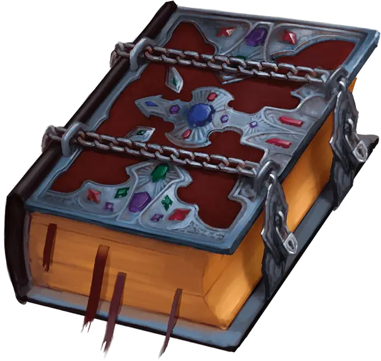

Бесконечный гримуар
Grimoire Infinitus
Чудесный предмет, легендарный (требуется настройка волшебником)

Рекомендованная стоимость от 50 001 зм
Некоторые из этих книг заклинаний с позолоченными страницами и посеребренными обложками были созданы в эпоху Арканума, но только одна была найдена после окончания Катастрофы. Книга три дюйма в толщину, восемь дюймов в ширину, двенадцать дюймов в длину, весит три фунта и имеет бесконечное количество страниц.
Дремлющий. Большая часть книги пуста, но на первых страницах книги записаны следующие заклинания: безмолвный образ [silent image], верный пес Морденкайнена [Mordenkainen’s faithful hound], власть над погодой [control weather], волна грома [thunderwave], газообразная форма [gaseous form], длань Бигби [Bigby’s hand], знание легенд [legend lore], Леомундов потайной сундук [Leomund’s secret chest], луч слабости [ray of enfeeblement], множественное внушение [mass suggestion], обнаружение мыслей [detect thoughts], охранная руна [glyph of warding], очарование личности [charm person], преграда магии [antimagic field], предвидение [foresight], радужные брызги [prismatic spray], сигнал тревоги [alarm], смятение [confusion], сотворение нежити [create undead], телепортация [teleport], туманный шаг [misty step], увеличение/уменьшение [enlarge/reduce], ужас [fear], усыхание [blight], фальшивый двойник [mislead].
Вы можете использовать гримуар как свою книгу заклинаний и можете записывать в него новые заклинания, как обычно. Когда вы подготавливаете заклинания волшебника с помощью гримуара, количество заклинаний волшебника, которые вы можете подготовить, увеличивается на 1.
Пробуждённый. Когда бесконечный гримуар пробуждается, он приобретает следующие свойства:
- Пока вы владеете этой книгой заклинаний, вы получаете преимущество на спасброски против заклинаний и магических эффектов.
- Когда вы подготавливаете заклинания волшебника, используя гримуар в качестве книги заклинаний, количество заклинаний, которые вы можете подготовить, снова увеличивается на 1.
Возвышенный. Когда Бесконечный Гримуар достигает возвышенного состояния, он приобретает следующие свойства:
- Теперь вы можете использовать своё умение «Магическое восстановление» дважды между продолжительными отдыхами, а не один раз.
- Когда вы подготавливаете заклинания волшебника, используя гримуар в качестве книги заклинаний, количество заклинаний, которые вы можете подготовить, снова увеличивается на 1.